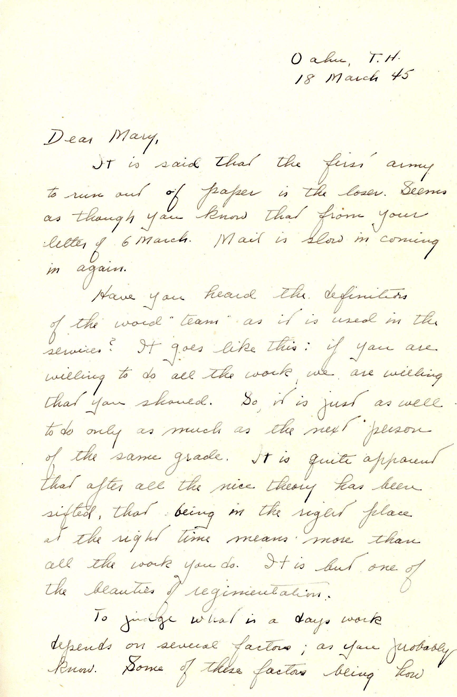
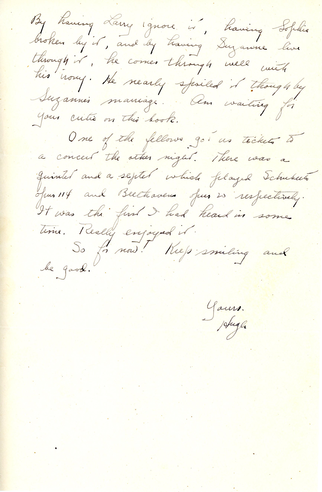
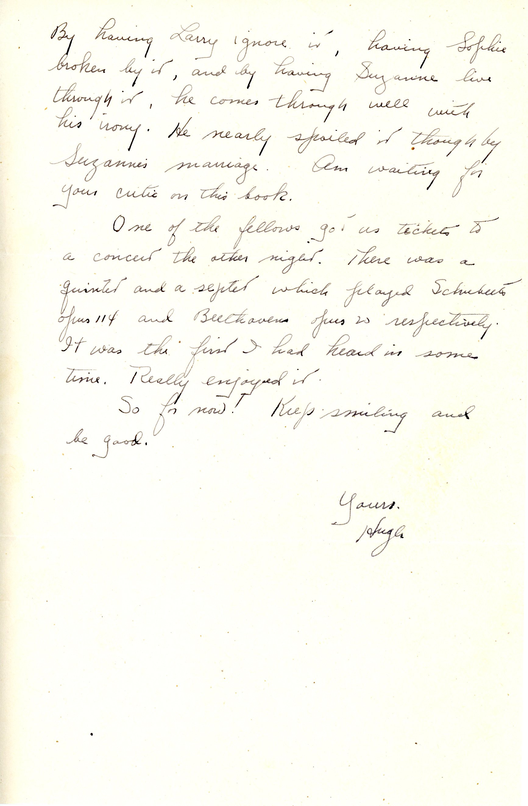
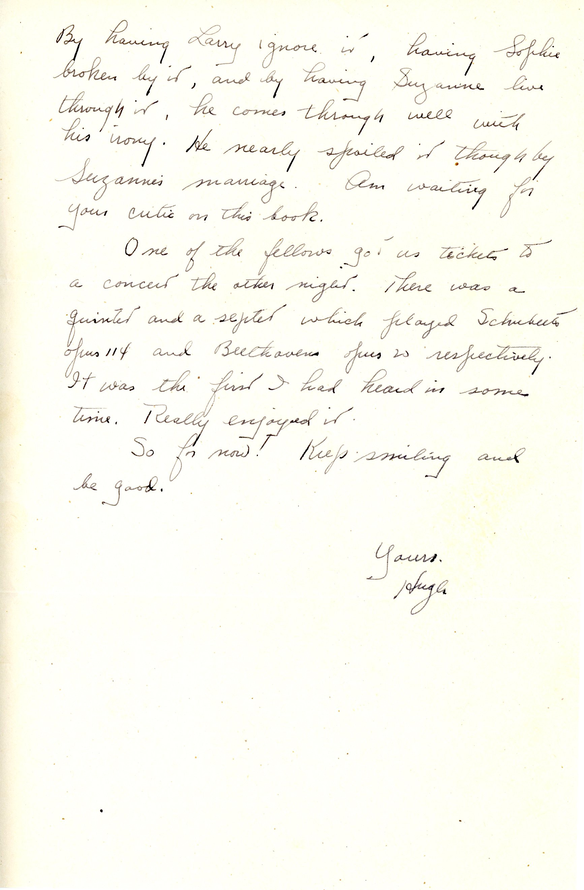

Navigation : Background - Hugh H Lavery Autobiography - Biographic Details Letters ... 1944 - 17 July 1944 - 11 September 1944 - 25 September 1944 - 6 October 1944 - 9-10 October 1944 - 22 October 1944 - 27 October 1944 - 11 November 1944 - 29 November 1944 - 3 December 1944 - 29 December 1944 Letters ... 1945 - 10 Jan 1945 - 31 Jan 1945 - 4 Feb 1945 - 21 Feb 1945 - 12 March 1945 - 18 March 1945 - 22 March 1945 - 2 April 1945 - 10 April 1945 - ? April 1945 - 24 May 1945 - 4 June 1945 - 19 June 1945 Credits 18 March 1945 Dad defines “team” used in the Army,offers a perceptive review of Maugham’s “The Razor’s Edge” and attends a concert.   12 March 1945 22 March 1945
 
